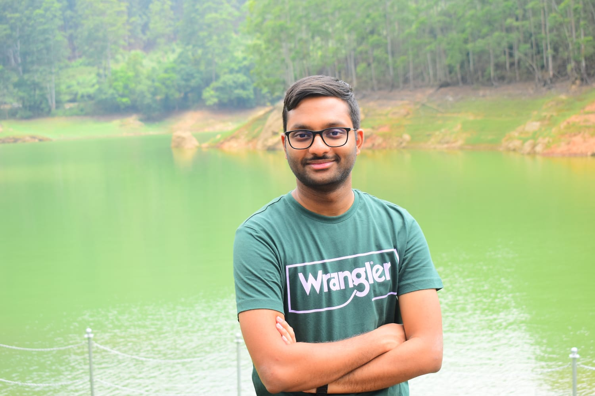

Vinayak C

About Me
I am currently pursuing a degree in Computer Science and Engineering at RV College of Engineering, Bengaluru. My passion lies in constantly learning and applying my knowledge to tackle real-world challenges. I have a keen interest in Machine Learning, Data Science, Computer Vision, Web Development, and Competitive programming, and have undertaken various projects in these areas. I am enthusiastic about collaborating with others to innovate and drive positive change in these domains.
Education
-
RV College of Engineering, Bangalore, IN
Dec 2021 - Jul 2025
BE Computer Science and Engineering
GPA: 9.23
-
Excellent PU College, Moodbidri,IN
Jun 2019 - Jun 2021
Pre University PCMC
Percentage: 100.00%
Work Experience
-
Culture Instruments India, Bangalore,IN
Project Intern
Nov 2023 - Dec 2023
- Custom built Edge Detection Software to measure contact angles.
- Designed and built semi-automatic syringe pump with Camera to record the drop formation.
- Prototype offers accuracy of up to 4 decimal places and Decreased the cost by 250%.
-
Inferigence Quotient, Bangalore,IN
Project Intern
Jun 2023 - Sep 2023
- Developed a Face Recognition based Office Attendance System identifies a person using their facial footage captured by the camera and updates their attendance status in the Database.
- The tracker module was based on Strongsort, Neural Network-based Architectures like YOLOv8 and InceptionResNet were used for Detection and Recognition, and MySQL was used for Database Connectivity.
-
System Consultant Information India Ltd, Bangalore,IN
Project Intern
Nov 2022 - Dec 2022
- Extraction of data from Handwritten Trip sheet Scans and providing output in CSV format.
- Reviewed Open Source Models like EasyOCR and SimpleHTR.
- Implemented combination of EasyOCR and Regular Expressions to detect and correct data.
Skills
- Programming languages: Python, C, C++, JuPyter Notebook, HTML, CSS, Javascript
- Python Libraries: Tensorflow, OpenCV, Pandas, Streamlit
Projects
-
QuantQuips - - Python, Langchain, Streamlit, Mistral 7B
Source Code link
- A streamlit based testing platform for algorithmic trading.
- Genetic algorithm to analyse the optimal parameters.
- Locally run LLM with chatting and onboard learning from text documents.
- Finalists in Hack4Soc 2.0 and gained appreciation from JPMC judging panel
Publications
-
Handwritten Tripsheet Analysis
IEEE Xplore Digital, Jul 2023,
Novelty - Combination of EasyOCR and Regular expressions. Substantial increase in matching accuracy.
Click Here to view the Paper
Certifications
-
Introduction to Soft Computing
NPTEL, Mar 2024
An Introductory Course covering Fuzzy Logic,Optimisation,Genetic Algorithms and Artificial Neural
Networks. Earned Elite Silver certification with Top 5%ile.
-
Data science for Engineers
NPTEL, Oct 2023
A course on R Programming,Statistics and its applications and Linear Algebra. Earned Gold
certification with Top 1%ile.
Extra Curricular Activities
-
Coding Club RVCE, Bangalore,IN
Member, Jul 2022 - Present
Organizer of CodeWave 2k23 at RVCE
An initiative by Coding Club RVCE to teach programming languages and solve Competitive Coding
challenges using the same
Other